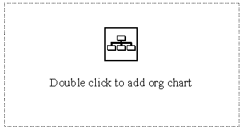
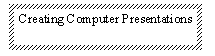

[ Contents ] [ Previous ] [ Next ]

 Adding Objects Without
Wizards
Adding Objects Without
Wizards
Having learned about the interface for PowerPoint and how to create an initial style, it is time to learn how to add objects to a slide. There are two methods for adding objects: adding objects using the predefined PowerPoint Add Objects Wizards, and adding objects freehand.
Adding objects using the Wizards is very straightforward; it
is simply an exercise of following the instructions on the page.
For example, the first title page displays two text boxes. The
text boxes for the main title and the subtitle are already provided
for you (don't worry. You can erase or move them if you want).

Clip Art and organizational charts can be added with similar
ease by selecting the appropriate slide format using the Slide
Layout button (more about slide layout later). The wizards for
these object types are shown below:


In many situations, a person may want to develop a slide that does not fit into one of the predefined slide layouts, or add to an existing layout. There are four main types of objects that can be added to a slide: text, lines and shapes, Clip art, and other graphic files. Adding each of these to a slide is described below:
To add text into an existing slide, use the textbox button
 . Click once on the text box button and then
move to the place on the slide where you would like to add text
(you'll be able to change the position later). Notice that the
cursor has changed shape to a downward pointing arrow. This indicates
that the next click will add a textbox. Clicking once will open
a textbox and provide you with a flashing cursor . Text can now
be entered into the box. Hitting the "Enter" key will
automatically create a new line in the text box. As shown below
. Click once on the text box button and then
move to the place on the slide where you would like to add text
(you'll be able to change the position later). Notice that the
cursor has changed shape to a downward pointing arrow. This indicates
that the next click will add a textbox. Clicking once will open
a textbox and provide you with a flashing cursor . Text can now
be entered into the box. Hitting the "Enter" key will
automatically create a new line in the text box. As shown below

In similar fashion, lines and shapes can be added to a slide
by clicking the appropriate icon on the drawing toolbar and placing
the cursor at the point on the slide that you wish to add the
line or shape. Lines and shapes differ from text in that to create
the line or shape you must "click and hold" the mouse
button and drag out the line or shape that you want. The procedure
for adding a rectangle is shown below:

Click on the rectangle box.
Move your mouse to the slide area.
Click and drag to draw the size of the rectangle.
Release the mouse button. The rectangle appears.

Adding Clip Art is easy. Deciding on which Clip Art to use is difficult. For this reason, PowerPoint provides a method for browsing through Clip Art before you add the Clip Art to a slide. To select Clip Art, you can either select the "Clip Art" option from the "Insert" menu or click the Clip Art icon from the standard PowerPoint toolbar.
The icon looks like this  . Clicking this icon
provides the following screen:
. Clicking this icon
provides the following screen:

You can now browse through the Clip Art at your own leisure.
If you are in a hurry, selecting a category will reduce the amount
of clip art that you will have to browse through before you find
what you are looking for. When you have found the piece that you
would like to include, either double click on the clip you want
or click once to highlight the clip and then press the "Insert"
button to add the clip to your slide.
The clip art is added to the slide at a default size and position
that is rarely appropriate. The size and position of the clip
art can easily be changed as will be discussed in the next section.
Adding Pictures from Other Programs
You are not restricted to using Clip Art in your slides. PowerPoint
has the ability to add a variety of graphic files into your slide.
These include (to name a few common ones) Windows Bitmaps (.bmp),
Windows Metafiles (.wmf), Graphic Interface files (.gif), JPEG
(.jpg) and Encapsulated Postscript files (.eps). To add these
types of files into your slide choose the "Insert" menu,
then select "Picture" and "From File..."option.
The following screen appears asking for the location of the file
to be inserted:

After selecting the appropriate file, press the "Insert"
button and the picture will be imported into your slide.
What about adding Pictures from a Website?
Pictures from websites are normally stored as *.jpg or *.gif files. Either of these file types can now be inserted into PowerPoint.
Screen capture is another method that can be used to create pictures that can be imported into PowerPoint. Again, additional software, capable of selecting an area of the screen and translating the "screen shot" into a graphics file, is required. The quality of screen capture files is considerable lower than that of professionally created graphics files, but the captures can be useful in areas where text quality is not important. (For example, a screen capture program PixWizard, was used to create the screen pictures shown in this document)